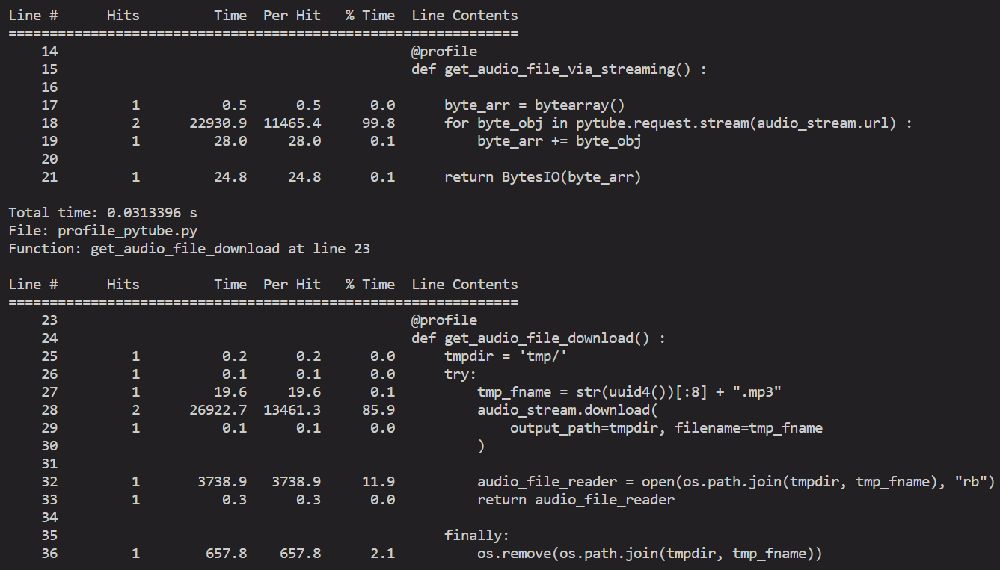

환경을 셋팅했으니, 이제 개선포인트를 찾아서 하나씩 개선해나갈 차례이다.
가장 먼저 택한 개선포인트는 pytube에서 오디오파일을 직접 다운로드하는 부분이 있는데, 이 다운로드 과정을 생략하고 바로 whisper 모델에 넘겨주도록 바꾸는 것이다.
유튜브 url이 들어오면, mp3파일로 변환해주어야 다음 단계인 whisper모델에 넘길 수 있다. url을 mp3로 변환하는 단계는 pytube 라는 라이브러리를 사용했다.
def audio_stream(self):
"""
**download audio file as side effect
"""
try:
tmp_fname = str(uuid4())[:8] + ".mp3"
self.parse_obj.streams.filter(only_audio=True).first().download(
output_path=tmpdir, filename=tmp_fname
)
audio_file_reader = open(os.path.join(tmpdir, tmp_fname), "rb")
return audio_file_reader
finally:
os.remove(os.path.join(tmpdir, tmp_fname))
pytube에서 변환한 음성 데이터를 파일로 다운로드하고 다시 open() 함수로 읽는 형식으로 구성되어있다. 그리고 다운로드한 파일은 데이터를 넘겨준 후, 삭제되도록 설정했다.
뭔가 아쉽다는 생각이 들었다. 다운로드하지 않고, 바로 whisper api에 넘길 수 있다면 더 효율적이지 않을까?
우선 pytube가 음성 데이터를 리턴할 수 있는 데이터 형식과 whisper api가 인풋으로 받을 수 있는 형식들을 살펴봤다.
우선 whisper api의 리포를 확인하니, whisper는 _IoBufferReader를 인풋으로 받는다. (open(file, ‘rb’) 가 리턴하는 클래스다)
pytube는 YouTube 클래스로 url을 넘겨받아 파싱한 후, 필요한 처리를 하는 식으로 구성되어있다.
parser = pytube.YouTube(URL)
parser.streams # parser.streams = List[Stream]
이 streams에는 해당 비디오들에 대한 정보가 담긴 Stream 이 리스트로 들어있다. 혹시 download 함수 말고, 바로 데이터를 취할 수 있는 함수가 있는지 확인해봤지만, API 문서에도 소스코드에도 딱히 없었다. 그래서 download() 함수를 까서 보았다.
def download(
self,
output_path: Optional[str] = None,
filename: Optional[str] = None,
filename_prefix: Optional[str] = None,
skip_existing: bool = True,
timeout: Optional[int] = None,
max_retries: Optional[int] = 0
) -> str:
# 파일 이름 작명
...
# 이미 파일이 있는지 확인
...
# 다운로드가 남은 파일사이즈 체크
bytes_remaining = self.filesize
logger.debug(f'downloading ({self.filesize} total bytes) file to {file_path}')
with open(file_path, "wb") as fh:
try:
for chunk in request.stream(
self.url,
timeout=timeout,
max_retries=max_retries
):
# reduce the (bytes) remainder by the length of the chunk.
bytes_remaining -= len(chunk)
# send to the on_progress callback.
self.on_progress(chunk, fh, bytes_remaining)
except HTTPError as e:
if e.code != 404:
raise
# Some adaptive streams need to be requested with sequence numbers
for chunk in request.seq_stream(
self.url,
timeout=timeout,
max_retries=max_retries
):
# reduce the (bytes) remainder by the length of the chunk.
bytes_remaining -= len(chunk)
# send to the on_progress callback.
self.on_progress(chunk, fh, bytes_remaining)
self.on_complete(file_path)
return file_path살펴보니, pytube.request.stream() 함수로 url에서 데이터를 전송받으면, Stream.on_progress 와 Stream.on_complete 가 파일에다가 기록하는 방식이였다. 우선 url에서 데이터를 전송받는 기능만 빼내면 될 듯하다. 에러 처리는 그 후에 붙이면 된다. 이제 그럼 pytube.request.stream() 함수를 살펴보자.
이제 line_profiler를 사용해서 두 버젼의 결과를 확인해보자.

download 버젼은 총 0.0376247초, 그리고 bytes들을 직접 넘기는 버젼은 0.0230186초 걸렸다.
Whisper나 LLM을 호출하는데 걸리는 오버헤드에 비하면 미미한 차이긴 하지만, 수정한 버젼이 약 30%정도 속도가 빠른 걸 확인할 수 있다.